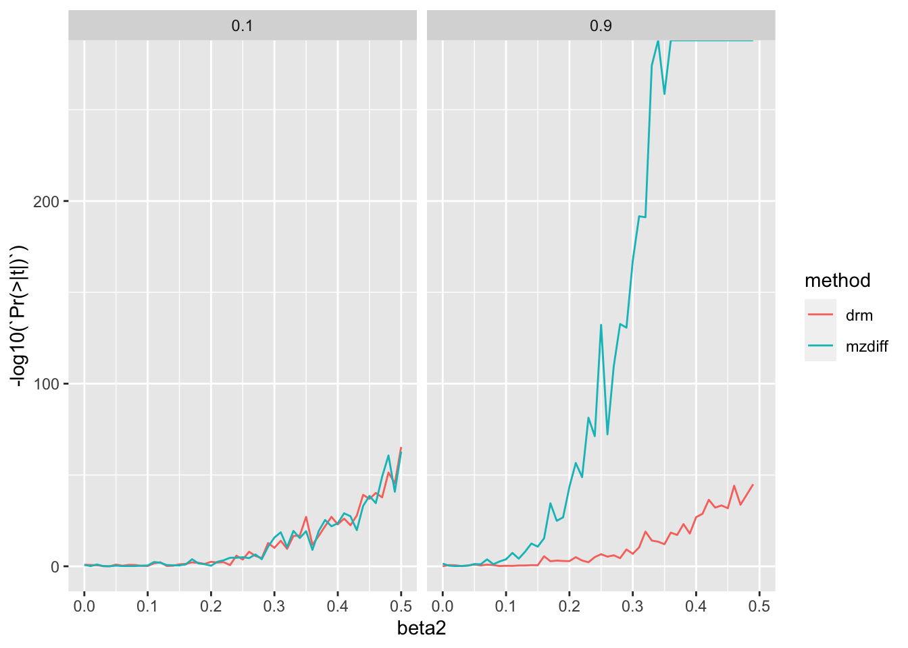
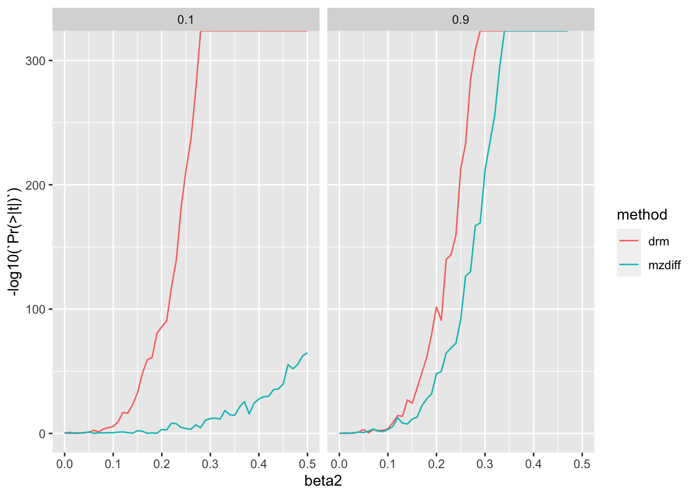
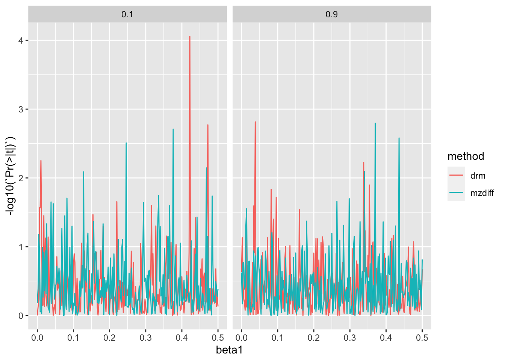

library(dplyr)
Attaching package: 'dplyr'The following objects are masked from 'package:stats':
filter, lagThe following objects are masked from 'package:base':
intersect, setdiff, setequal, unionlibrary(ggplot2)library(dplyr)
Attaching package: 'dplyr'The following objects are masked from 'package:stats':
filter, lagThe following objects are masked from 'package:base':
intersect, setdiff, setequal, unionlibrary(ggplot2)sim_mz <- function(n, beta1, beta2, af, h2)
{
g <- rbinom(n, 2, af)
prs <- g * beta1
vg <- rnorm(n, 0, h2)
v1 <- rnorm(n, 0, beta2 * g)
ve1 <- rnorm(n, 0, sqrt(1 - var(vg) - var(v1) - var(prs)))
y1 <- prs + v1 + vg + ve1
v2 <- rnorm(n, 0, beta2 * g)
ve2 <- rnorm(n, 0, sqrt(1 - var(vg) - var(v2) - var(prs)))
y2 <- prs + v2 + vg + ve2
return(tibble(
g, y1, y2
))
}
a <- sim_mz(100000, 0.1, 0.5, 0.3, 0.1)
var(a) g y1 y2
g 0.41886019 0.03927964 0.04297361
y1 0.03927964 1.00532252 0.01036933
y2 0.04297361 0.01036933 0.99984551a %>%
ggplot(., aes(x=as.factor(g), y=y1)) +
geom_boxplot()a <- sim_mz(100000, 0.1, 0.5, 0.3, 0.8)
a %>%
group_by(g) %>%
summarise(
m=mean(y1),
v=var(y1),
mzv=mean(abs(y1-y2))
)# A tibble: 3 × 4
g m v mzv
<int> <dbl> <dbl> <dbl>
1 0 -0.00612 0.808 0.451
2 1 0.0946 1.05 0.727
3 2 0.175 1.79 1.22 test_drm <- function(g, y)
{
y.i <- tapply(y, g, median, na.rm=T)
z.ij <- abs(y - y.i[g+1])
summary(lm(z.ij ~ g))$coef %>%
as_tibble() %>%
slice(2) %>%
mutate(method="drm")
}
test_drm(a$g, a$y1)# A tibble: 1 × 5
Estimate `Std. Error` `t value` `Pr(>|t|)` method
<dbl> <dbl> <dbl> <dbl> <chr>
1 0.146 0.00294 49.6 0 drm test_mz <- function(g, y1, y2)
{
yd1 <- abs(y1-y2)
r1 <- summary(lm(yd1 ~ g))$coef %>%
as_tibble() %>%
slice(2) %>%
mutate(method="mzdiff")
r1
}
test_mz(a$g, a$y1, a$y2)# A tibble: 1 × 5
Estimate `Std. Error` `t value` `Pr(>|t|)` method
<dbl> <dbl> <dbl> <dbl> <chr>
1 0.342 0.00250 137. 0 mzdiffA trait with high heritability will have vQTL effects that are relatively large in MZs, but heritability shouldn’t have a major part to play in unrelateds for estimating vQTL effects.
Start with simulations where population is comapred against mz and n pop = n mz pairs.
param <- expand.grid(
beta1 = 0,
beta2 = seq(0, 0.5, by=0.01),
h2 = c(0.1, 0.9),
af = 0.3,
n = 10000
)
dim(param)[1] 102 5res1 <- lapply(1:nrow(param), function(i)
{
a <- do.call(sim_mz, param[i,])
if(any(is.na(a$y1)) | any(is.na(a$y2)))
{
return(NULL)
}
bind_rows(
test_mz(a$g, a$y1, a$y2),
test_drm(a$g, a$y1)
) %>%
bind_cols(., param[i,])
}) %>%
bind_rows()Warning in sqrt(1 - var(vg) - var(v1) - var(prs)): NaNs producedWarning in rnorm(n, 0, sqrt(1 - var(vg) - var(v1) - var(prs))): NAs producedWarning in sqrt(1 - var(vg) - var(v1) - var(prs)): NaNs producedWarning in rnorm(n, 0, sqrt(1 - var(vg) - var(v1) - var(prs))): NAs producedWarning in sqrt(1 - var(vg) - var(v2) - var(prs)): NaNs producedWarning in rnorm(n, 0, sqrt(1 - var(vg) - var(v2) - var(prs))): NAs producedres1 %>% filter(n==10000) %>%
ggplot(., aes(x=beta2, y=-log10(`Pr(>|t|)`))) +
geom_line(aes(colour=method)) +
facet_grid(. ~ h2)
They are comparable at low heritability but as heritabiltiy increases, MZ method has a distinct advantage.
Now compare with more realistic sample sizes, 10k mz pairs vs 500k unrelateds
param <- expand.grid(
beta1 = 0,
beta2 = seq(0, 0.5, by=0.01),
h2 = c(0.1, 0.9),
af = 0.32
)
dim(param)[1] 102 4res2 <- lapply(1:nrow(param), function(i)
{
a1 <- do.call(sim_mz, param[i,] %>% mutate(n=10000))
a2 <- do.call(sim_mz, param[i,] %>% mutate(n=500000))
if(any(is.na(a1$y1)) | any(is.na(a1$y2)) | any(is.na(a2$y1)) | any(is.na(a2$y2)))
{
return(NULL)
}
bind_rows(
test_mz(a1$g, a1$y1, a1$y2),
test_drm(a2$g, a2$y1)
) %>%
bind_cols(., param[i,])
}) %>%
bind_rows()Warning in sqrt(1 - var(vg) - var(v1) - var(prs)): NaNs producedWarning in rnorm(n, 0, sqrt(1 - var(vg) - var(v1) - var(prs))): NAs producedWarning in sqrt(1 - var(vg) - var(v2) - var(prs)): NaNs producedWarning in rnorm(n, 0, sqrt(1 - var(vg) - var(v2) - var(prs))): NAs producedWarning in sqrt(1 - var(vg) - var(v1) - var(prs)): NaNs producedWarning in rnorm(n, 0, sqrt(1 - var(vg) - var(v1) - var(prs))): NAs producedWarning in sqrt(1 - var(vg) - var(v2) - var(prs)): NaNs producedWarning in rnorm(n, 0, sqrt(1 - var(vg) - var(v2) - var(prs))): NAs producedWarning in sqrt(1 - var(vg) - var(v1) - var(prs)): NaNs producedWarning in rnorm(n, 0, sqrt(1 - var(vg) - var(v1) - var(prs))): NAs producedWarning in sqrt(1 - var(vg) - var(v2) - var(prs)): NaNs producedWarning in rnorm(n, 0, sqrt(1 - var(vg) - var(v2) - var(prs))): NAs producedWarning in sqrt(1 - var(vg) - var(v1) - var(prs)): NaNs producedWarning in rnorm(n, 0, sqrt(1 - var(vg) - var(v1) - var(prs))): NAs producedWarning in sqrt(1 - var(vg) - var(v2) - var(prs)): NaNs producedWarning in rnorm(n, 0, sqrt(1 - var(vg) - var(v2) - var(prs))): NAs producedWarning in sqrt(1 - var(vg) - var(v1) - var(prs)): NaNs producedWarning in rnorm(n, 0, sqrt(1 - var(vg) - var(v1) - var(prs))): NAs producedWarning in sqrt(1 - var(vg) - var(v1) - var(prs)): NaNs producedWarning in rnorm(n, 0, sqrt(1 - var(vg) - var(v1) - var(prs))): NAs producedWarning in sqrt(1 - var(vg) - var(v2) - var(prs)): NaNs producedWarning in rnorm(n, 0, sqrt(1 - var(vg) - var(v2) - var(prs))): NAs producedggplot(res2, aes(x=beta2, y=-log10(`Pr(>|t|)`))) +
geom_line(aes(colour=method)) +
facet_grid(. ~ h2)
It looks like you’d just be better off with estimation in populations.
Check false discovery rates
param <- expand.grid(
beta1 = seq(0, 0.5, by=0.002),
beta2 = 0,
h2 = c(0.1, 0.9),
af = 0.32
)
dim(param)[1] 502 4res3 <- lapply(1:nrow(param), function(i)
{
a1 <- do.call(sim_mz, param[i,] %>% mutate(n=10000))
a2 <- do.call(sim_mz, param[i,] %>% mutate(n=500000))
if(any(is.na(a1$y1)) | any(is.na(a1$y2)) | any(is.na(a2$y1)) | any(is.na(a2$y2)))
{
return(NULL)
}
bind_rows(
test_mz(a1$g, a1$y1, a1$y2),
test_drm(a2$g, a2$y1)
) %>%
bind_cols(., param[i,])
}) %>%
bind_rows()ggplot(res3, aes(x=beta1, y=-log10(`Pr(>|t|)`))) +
geom_line(aes(colour=method)) +
facet_grid(. ~ h2)
res3 %>%
mutate(fdr=p.adjust(`Pr(>|t|)`, "fdr")) %>%
group_by(method, h2) %>%
summarise(
t1 = sum(`Pr(>|t|)` < 0.05, na.rm=T)/sum(!is.na(`Pr(>|t|)`)),
nfdr = sum(fdr < 0.05)/sum(!is.na(`Pr(>|t|)`))
)`summarise()` has grouped output by 'method'. You can override using the
`.groups` argument.# A tibble: 4 × 4
# Groups: method [2]
method h2 t1 nfdr
<chr> <dbl> <dbl> <dbl>
1 drm 0.1 0.0478 0
2 drm 0.9 0.0359 0
3 mzdiff 0.1 0.0677 0
4 mzdiff 0.9 0.0438 0Under normal distribution type-1 error rate is well controlled.